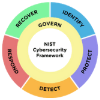

Rising payroll costs
Local salaries, benefits and recruitment expenses continue to increase.
Access skilled professionals in accounting, administration, sales, IT, design and development—without the cost and complexity of local hiring.
Trusted by Australian
businesses like yours
Smart Outsource helps Australian businesses access reliable professionals who become an extension of their internal team—supported from first brief to day-to-day delivery.
Meet professionals selected around your role, working style and business priorities.
Start with the capacity you need today, then adjust your team as workloads, priorities and opportunities change.
We stay involved after the match, helping your new team member settle in and contribute with confidence.
Our controls are designed around established security frameworks and Australian privacy guidance.

Growing businesses need more support, but traditional hiring brings higher costs, long recruitment timelines and limited access to skilled people.
Local salaries, benefits and recruitment expenses continue to increase.
Finding skilled people can take weeks—or months.
Your best people lose time to admin instead of growth.
Every new local hire adds overhead and long-term commitment.
We connect Australian businesses with skilled offshore professionals who support daily operations, improve productivity and help you scale faster.
Build capacity where you need it most, with one dedicated professional or a wider team across multiple functions.
Keep finance operations accurate and moving.
Reduce admin load and keep daily operations on track.
Create more conversations and more opportunities.
Expand your creative and digital delivery capacity.
Keep your systems, users and customers supported.
Communication, expectations and workflows aligned to how Australian teams operate.
Every professional is screened against the skills, experience and fit your role requires.
Scale your capacity without expensive recruitment commitments or rigid team structures.
Practical help with onboarding, communication and the ongoing success of your team.
Access global talent while keeping your team connected to your priorities and standards.
Get my free staffing planPeople who understand the pace, systems and day-to-day demands behind your work—ready to add capacity where it matters.
Admin support, billing assistance, documentation and customer coordination.
Bookkeeping, payroll support, tax preparation and financial operations.
Virtual assistance, customer service, admin and operational support.
Development, IT support, QA and technical assistance.
Customer support, data entry, store management and operations.
Design, development, lead generation and campaign support.
A clear path from the role you need to a professional working inside your day-to-day systems.
Plan my offshore teamShare the role, skills, working hours and outcomes your business needs. We turn that brief into a practical staffing plan.
Review a focused shortlist of professionals screened against your requirements, then meet the people who fit.
Your new team member joins your workflow with clear onboarding, payroll administration and ongoing support.
Managing Director@AuditSmart SMSF Pty Ltd“The offshore team cleared our longstanding AR backlog in 6 weeks — we stopped losing contractors due to late payments. Now our local team focuses on client growth and contract renewals.”
Managing Director@AuditSmart SMSF Pty Ltd“The offshore team cleared our longstanding AR backlog in 6 weeks — we stopped losing contractors due to late payments. Now our local team focuses on client growth and contract renewals.”
Managing Director@AuditSmart SMSF Pty Ltd“The offshore team cleared our longstanding AR backlog in 6 weeks — we stopped losing contractors due to late payments. Now our local team focuses on client growth and contract renewals.”
Managing Director@AuditSmart SMSF Pty Ltd“The offshore team cleared our longstanding AR backlog in 6 weeks — we stopped losing contractors due to late payments. Now our local team focuses on client growth and contract renewals.”
Managing Director@AuditSmart SMSF Pty Ltd“The offshore team cleared our longstanding AR backlog in 6 weeks — we stopped losing contractors due to late payments. Now our local team focuses on client growth and contract renewals.”
Tell us what support your business needs and discover how Smart Outsource can help you reduce costs and scale faster.
Get my free staffing planWe help you define your requirements, source suitable professionals and support onboarding so your new team member can join your day-to-day workflow.
You can hire across accounting, administration, sales, customer support, IT, design and development.
Yes. Working schedules can be aligned with your business requirements and collaboration preferences.
The timeline depends on the role and requirements, but our focused sourcing and screening process is designed to move quickly.
We provide flexible staffing options designed around your business needs and preferred team structure.
Candidates are screened against the skills, experience and role requirements you set before you meet them.
Tell us what you need. We’ll map the role, costs and next steps.
We’ll review what you need and get back to you within one business day with your free staffing plan.